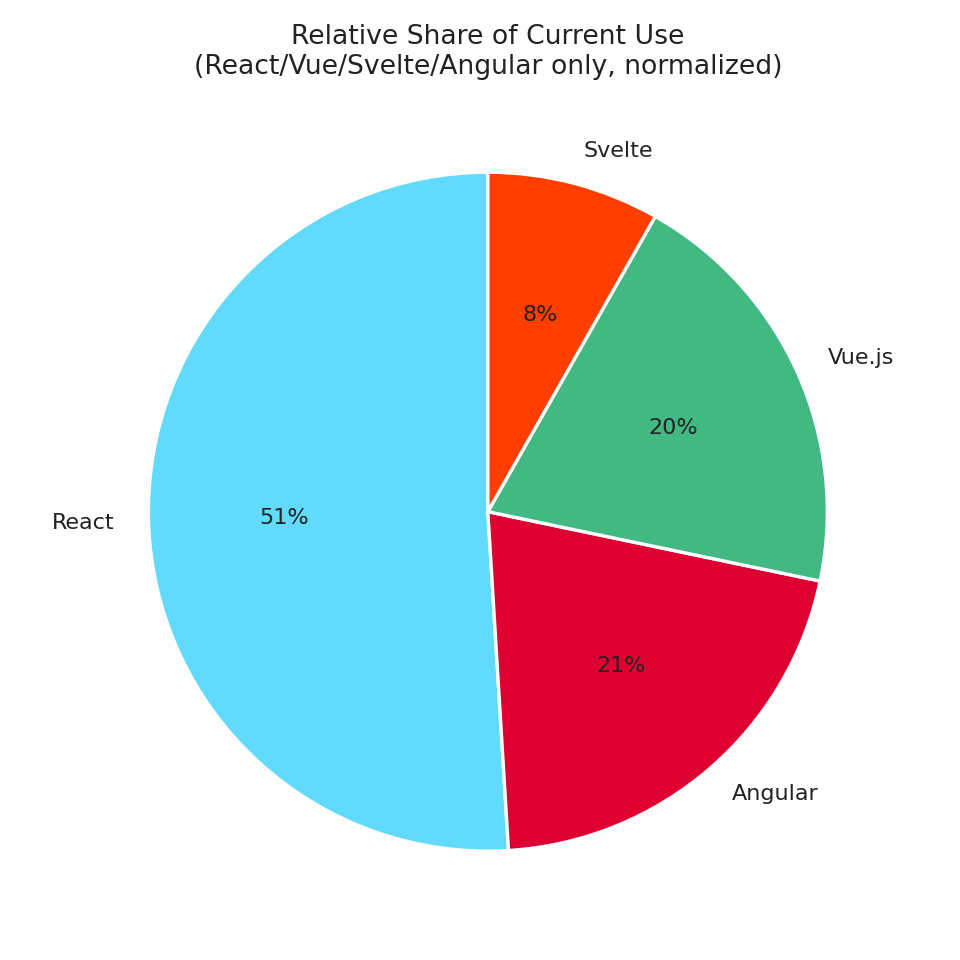

Market Share & Developer Sentiment
Stack Overflow Developer Survey 2025, roughly 49,000 respondents. Popularity is current use; Desired is 'want to use next'; Admired is 'used it and would use it again.'
Framework | Popularity | Desired | Admired |
|---|---|---|---|
React | 44.7% | 30.7% | 52.1% |
Angular | 18.2% | 12.6% | 44.7% |
Vue.js | 17.6% | 15.3% | 50.9% |
Svelte | 7.2% | 11.1% | 62.4% |
ARKlight has no row here on purpose -- it's pre-1.0 with no survey presence yet. A comparison chart that invented a number for it would misrepresent both datasets.
